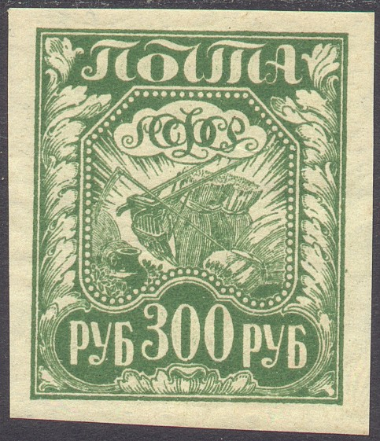

{kind=link}

Return To Catalogue - Russia, Sowjet Union, part 2 - Russia, Sowjet Union, part 3 - Russia Overview
Note: on my website many of the
pictures can not be seen! They are of course present in the
catalogue;
contact me if you want to purchase the catalogue.
Agriculture:
1 R orange 2 R brown 100 R yellow 200 R brown 300 R green Arts and Science
250 R lilac Industry (small size)


5 R blue 500 R blue 1000 R red Industry (large size)

5000 R violet 10000 R blue 22500 R violet Arms of Sowjet Union, larger size

20 R blue 7500 R blue Revolution, larger size 40 R blue Surcharged

5000 R (black or red) on 1 R orange 5000 R (black or red) on 2 R brown 5000 R (black or red) on 5 R blue 5000 R (black or red) on 20 R blue 7500 R on 250 R violet 10000 R (black or red) on 40 R blue 100000 R on 250 R violet With overprint '1293' and Russian text
2 R + 2 R (golden overprint) on 250 R violet 4 R + 4 R (golden or silver overprint) on 5000 R violet Overprinted (1924 Leningrad flood charity; different overprints on different stamps)

3 + 10 k on 100 R yellow 7 + 20 k on 200 R brown 14 + 30 k on 300 R green 12 + 40 k (red) on 500 R blue 20 + 50 k on 1000 R red

5000 R stamp with overprint
(I've been told that this stamp and the surcharge are forged, I
have no further information)
A bogus Western Army overprint on a 7500 R stamp (note the French '5129' numeral cancel):
For other forgeries with the same overprint click here.
100 R orange 250 R violet 1000 R red
Forgeries exist of these stamps, even in 'wrong' colors: 100 R red, 250 R red and 1000 R orange.
Russia, Sowjet Union, part 2 and part 3.
{kind=link}
{kind=link}